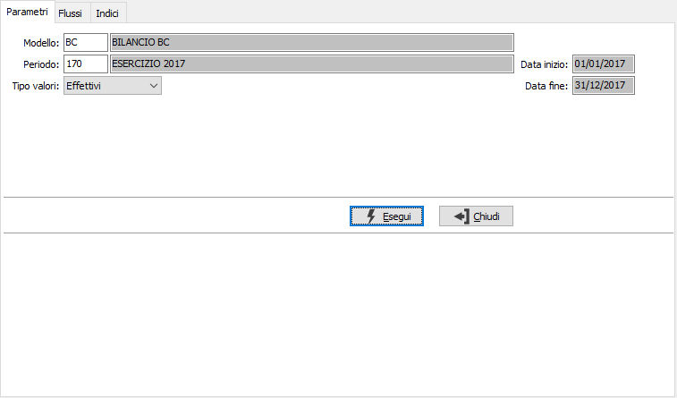
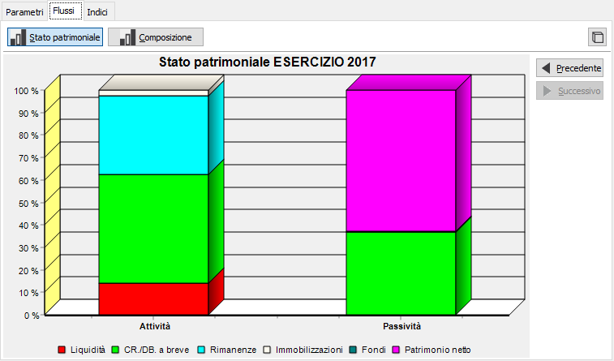
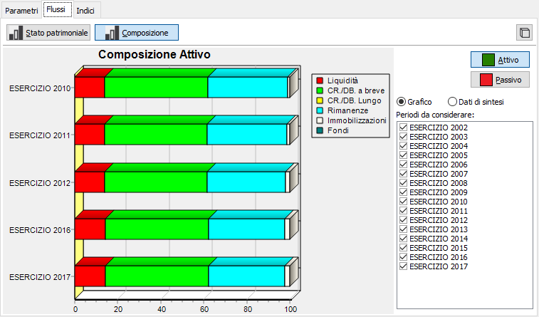
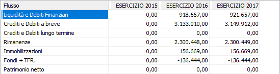
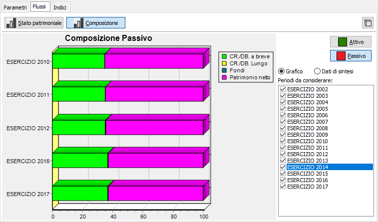
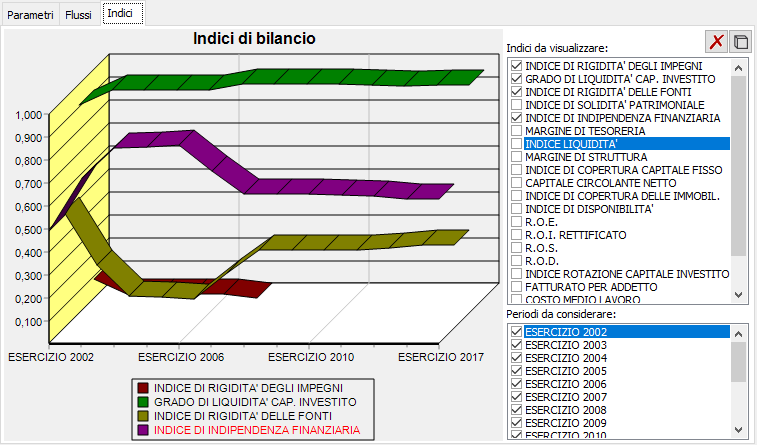

Il pulsante, presente su ogni pagina, consente di alternare la visualizzazione del grafico in tre o due dimensioni.
Il pulsante, presente su ogni pagina, consente di alternare la visualizzazione del grafico in tre o due dimensioni.Analisi indici e flussi
La procedura consente di analizzare e comparare i valori relativi ad un modello di riclassificazione, visualizzando i risultati sotto forma di grafico ed operando le aggregazioni previste dall'operatore sulle voci di bilancio in relazione all'assegnazione del codice di analisi flusso.
Sono possibili diversi tipi di visualizzazione, sia in grafico che a valore, oltre alla comparazione degli indici di bilancio.
La pagina di richiesta parametri consente di inserire i limiti dell'analisi, le successive pagine Flussi ed Indici riportano i dati selezionati.
Sulla linguetta Flussi ed Indici, sono attivi i bottoni Stampa ed Anteprima sulla toolbar per effettuare la stampa di quanto visualizzato nella linguetta che stiamo analizzando, compresi i grafici.

MODELLO: inserire il modello di riclassificazione da utilizzare per la selezione; il modello indica alla procedura le voci da utilizzare. Sul campo sono attive le funzioni di ricerca (F9) sulla tabella stessa.
PERIODO: inserire il periodo per cui si desidera effettuare l'elaborazione delle voci; il periodo indica alla procedura i valori da utilizzare. L'inserimento del periodo determina la valorizzazione delle date di elaborazione. Sul campo sono attive le funzioni di ricerca (F9) sulla tabella stessa.
VALORI: indicare quali valori si desidera utilizzare per l'analisi ed eventualmente modificare: i valori effettivi, quelli rettificati oppure quelli preventivi.
La pressione del pulsante Esegui da inizio all'elaborazione e si posiziona nella pagina Flussi mostrando il grafico relativo allo Stato patrimoniale.
Il pulsante, presente su ogni pagina, consente di alternare la visualizzazione del grafico in tre o due dimensioni.
Il grafico di Stato patrimoniale visualizza le voci di analisi flussi suddivisi in due colonne, una per l'attivo ed una per il passivo. Con i pulsanti Precedente e Successivo attivi è possibile spostarsi da un periodo all'altro. I periodi scorrono per tipologia omogenea, ad esempio se ho selezionato un periodo di tipo Semestrale scorrendo saranno visualizzati solo i periodi di tipo semestrale.

Il pulsante Composizione passa dalla visualizzazione del grafico Stato patrimoniale a quello di tipo composizione.

In questa rappresentazione le voci di analisi flussi sono riportate con una rappresentazione percentuale per periodi di tipo omogeneo, seguendo le stesse regole esposte per lo scorrimento dei periodi nella sezione stato patrimoniale. I periodi possono essere tolti oppure aggiunti semplicemente togliendo oppure apponendo la spunta dall'elenco periodi da considerare. L'analisi della composizione può essere visualizzata anche non graficamente, ma tramite i dati di sintesi (valori per voce di analisi flusso); selezionando la voce Grafico sarà visualizzata la rappresentazione del grafico, selezionando la voce Dati di sintesi saranno visualizzati i valori.

Tramite i pulsanti Attivo e Passivo si passa dall'analisi della composizione delle attività a quella delle passività, con le stesse prestazione descritte precedentemente.

La pagina Indici consente di visualizzare in forma di grafico i valori degli indici calcolati in relazione ai valori ed al modello selezionato per periodi di tipo omogeneo, seguendo le stesse regole esposte per lo scorrimento dei periodi nella sezione stato patrimoniale. I periodi possono essere tolti oppure aggiunti semplicemente togliendo oppure apponendo la spunta dall'elenco periodi da considerare; così come gli indici visualizzati.
 Il pulsante consente di azzerare tutti gli indici selezionati senza dover togliere la spunta manualmente.
Il pulsante consente di azzerare tutti gli indici selezionati senza dover togliere la spunta manualmente.
